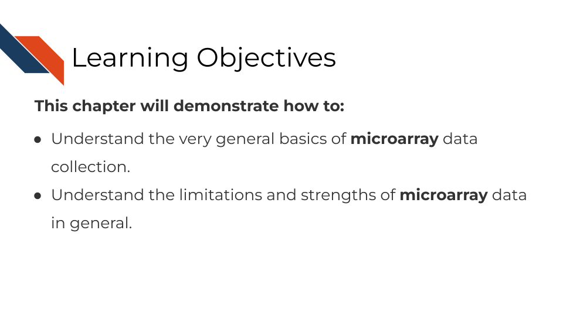
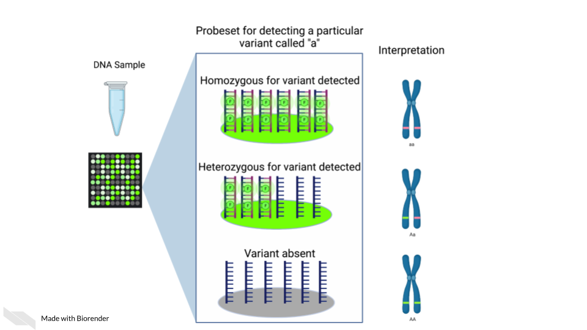

Chapter 4 Microarray Data
4.1 Learning Objectives

4.2 Summary of microarrays
Microarrays have been in use since before high throughput sequencing methods became more affordable and widespread, but they still can be a effective and affordable tool for genomic assays. Depending on your goals, microarray may be a suitable choice for your genomic study.
4.3 How do microarrays work?
All microarrays work on hybridization to sets of oligonucleotides on a chip. However, the preparation of the samples, and the oligonucleotides’ hybridization targets vary depending on the assay and goals.

On a basic principle, oligonucleotide probes are designed for different targets sets designed for the same targets are put together. On the whole chip, these probes are arranged in a grid like design so that after a sample is hybridized to them, you can detect how much of the target is detected by taking an image and knowing what target each location is designed to.
4.3.1 Pros:
- Microarrays are much more affordable than high throughput sequencing which can allow you to run more samples and have more statistical power [@Tarca2006; @refinebioexamples2019].
- Microarrays take less time to process than most high throughput sequencing methods[@Tarca2006; @refinebioexamples2019].
- Microarrays are generally less computationally intensive to process and you can get your results more quickly[@Tarca2006; @refinebioexamples2019].
- Microarrays are generally as good as sequencing methods for detecting clinical endpoints [@Zhang2015].
4.3.2 Cons:
- Microarray chips can only measure the targets they are designed for, and cannot be used for exploratory purposes [@Zhang2015].
- Microarrays’ probe designs can only be as up to date as the genome they were designed against at the time [@Mantione2014; @refinebioexamples].
- Microarray does not escape oligonucleotide biases like GC content and sequence composition biases[@refinebioexamples2019].
4.4 What types of arrays are there?
4.4.1 SNP arrays

Single nucleotide polymorphism arrays are designed to measure DNA variants. They are designed to target DNA variants. When the sample is hybridized, the amount of fluorescence detected can be interpreted to indicate the presence of the variant and whether the variant is homogeneous or heterogenous. The samples prepped for SNP arrays then need to be DNA samples.
4.4.1.1 Examples:
- The 1000 genomes project is a large collection of SNP data array from many populations around the world and is available for download.
4.4.2 Gene expression arrays

Gene expression arrays are designed to measure gene expression. They are designed to target and measure relative transcript abundance level.
4.4.2.1 Examples:
- refine.bio is the largest collection of publicly available, already normalized gene expression data (including gene expression microarrays).
- Getting started in gene expression microarray analysis [@Slonim2009].
- Microarray and its applications [@Govindarajan2012].
- Analysis of microarray experiments of gene expression profiling [@Tarca2006].
4.4.3 DNA methylation arrays

DNA methylation can also be measured by microarray. To detect methylated cytosines (5mC), DNA samples are prepped using bisulfite conversion. This converts unmethylated cytosines into uracils and leaves methylated cytosines untouched. Probes are then designed to bind to either the uracil or the cytosine, representing the unmethylated and methylated cytosines respectively.
A ratio of the fluorescence signal can be used to identify the relative abundance of the methylated and unmethylated versions of the sequence.
Additionally, 5-hydroxymethylated cytosines (5hmC) can also be detected by oxidative bisulfite bisulfite sequencing [@Booth2013]. Note that bisulfite conversion alone will not distinguish between 5mC and 5hmC though these often may indicate different biological mechanics.
4.5 General processing of microarray data

After scanning, microarray data starts as an image that needs to be quantified, normalized and further corrected and edited based on the most current genome and probe annotation.
As noted above, microarrays do not escape the base sequence biases that accompany most all genomic assays. The normalization methods you use ideally will mitigate these sequence biases and also make sure to remove probes that may be outdated or bind to multiple places on the genome.
The tools and methods by which you normalize and correct the microarray data will be dependent not only on the type of microarray assay you are performing (gene expression, SNP, methylation), but most of all what kind of microarray chip design/platform you are using.
4.5.1 Examples
4.5.2 Microarray Platforms
There are so many microarray chip designs out there designed to target different things. Three of the largest commercial manufacturers have ready to use microarrays you can purchase. You can also design microarrays to hit your own targets of interest.
Here are full lists of platforms that have been published on Gene Expression Omnibus.
4.6 Very General Microarray Workflow
In the data type specific chapters, we will cover the microarray workflow and file formats in more detail. But in the most general sense, microarray workflows look like this, note that the exact file formats are specific to the chip brand and type you use (e.g. Illumina, Affymetrix, Agilent, etc.):

4.6.1 Microarray file formats
4.6.1.1 IDAT - intensity data file
This is an Illumina microarray specific file that contains the chip image intensity information for each location on the microarray. It is a binary file, which means it will not be readable by double clicking and attempting to open the file directly.
Currently, Illumina appears to suggest directly converting IDAT files into a GTC format. We advise looking into this package to help you do that.
4.6.1.2 DAT - data file
This is an Affymetrix’ microarray specific file parallel to the IDAT file in that it contains the image intensity information for each location on the microarray. It’s stored as pixels.
4.6.1.3 CEL
This is an Affymetrix microarray specific file that is made from a DAT file but translated into numeric values. It is not normalized yet but can be normalized into a CHP file.
4.6.1.4 CHP
CHP files contain the gene-level and normalized data from an Affymetrix array chip. CHP files are obtained by normalizing and processing CEL files.
4.7 General informatics files
At various points in your genomics workflows, you may need to use other types of files to help you annotate your data. We’ll also discuss some of these common files that you may encounter:
4.7.0.1 BED - Browser Extensible Data
A BED file is a text file that has coordinates to genomic regions. THe other columns that accompany the genomic coordinates are variable depending on the context. But every BED file contains the chrom, chromStart and chromEnd columns to start.
A BED file might look like this:
chrom chromStart chromEnd other_optional_columns
chr1 0 1000 good
chr2 100 3000 badFor more on BED files.
4.7.0.2 GFF/GTF General Feature Format/Gene Transfer Format
A GFF file is a tab delimited file that contains information about genomic features. These types of files are available from databases and what you can use to annotate your data.
You may see there are GFF2, GFF3, and GTF files. These only refer to different versions and variations. They generally have the same information. In general, GFF2 is being phased out so using GFF3 is generally a better bet unless the program or package you are using specifies it needs an older GFF2 version.
A GFF file may look like this (borrowed example from Ensembl):
1 transcribed_unprocessed_pseudogene gene 11869 14409 . + . gene_id "ENSG00000223972"; gene_name "DDX11L1"; gene_source "havana"; gene_biotype "transcribed_unprocessed_pseudogene";Note that it will be useful for annotating genes and what we know about them.
4.7.1 Other files
* If you didn’t see a file type listed you are looking for, take a look at this list by the BROAD. Or, it may be covered in the data type specific chapters.
4.7.2 Microarray processing tutorials:
For the most common microarray platforms, you can see these examples for how to process the data: